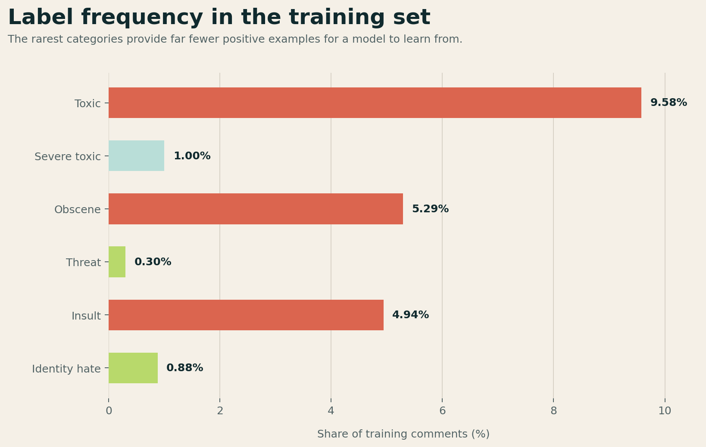
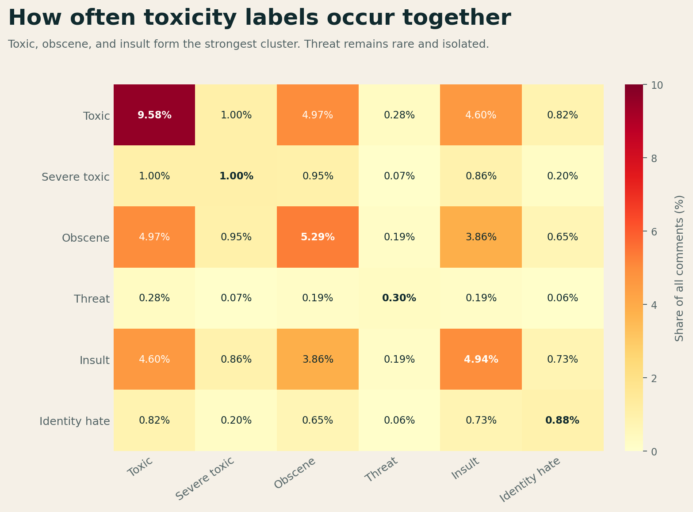
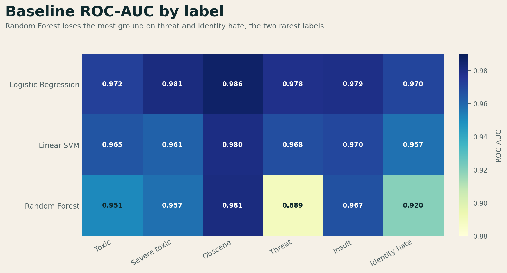
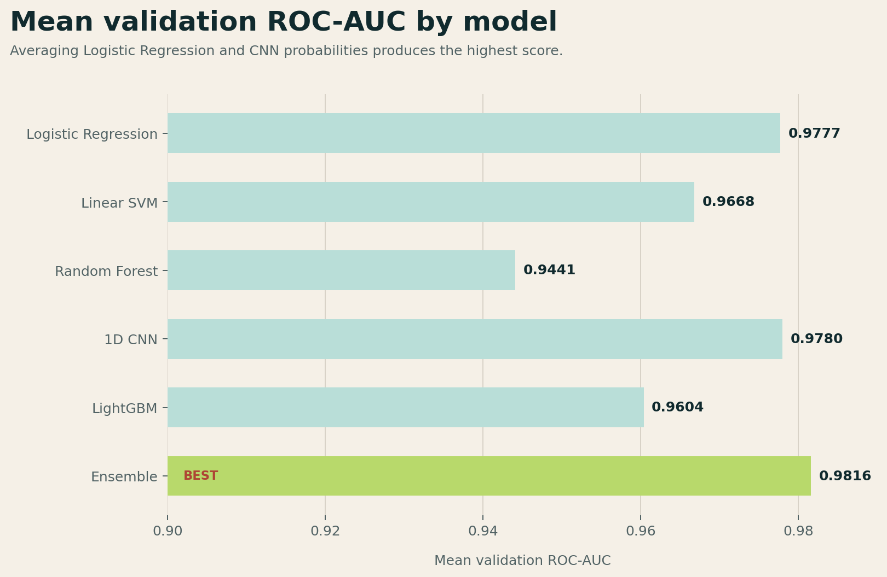

Sparse text favored linear decision boundaries
Logistic Regression beat Random Forest by more than three ROC-AUC points.
Group 9 machine learning project, 2025
We studied how linear text models and a small neural network respond to severe label imbalance in the Jigsaw Toxic Comment dataset. The best result came from averaging Logistic Regression and CNN probabilities.
The problem
Toxic comments are uncommon, and some categories are rare enough that an all-negative classifier still appears accurate. We centered evaluation on ROC-AUC, then examined per-label errors and tuned thresholds against F1.
Bar widths use a 10% reference scale.
Inside the dataset
The frequency chart shows how little positive evidence is available for threat and identity hate. The co-occurrence matrix shows that the labels are related, but not interchangeable.


Method
Measure label frequency, co-occurrence, comment length, and data quality.
Create TF-IDF unigrams and bigrams for classical models, plus padded token sequences for the CNN.
Test Logistic Regression, Linear SVM, Random Forest, LightGBM, and a 1D CNN.
Average linear and neural probabilities, then tune decision thresholds for each label.
Recorded validation results
The sparse linear baseline matched the CNN. Their errors differed enough that simple probability averaging raised mean ROC-AUC to 0.9816.


What we learned
Logistic Regression beat Random Forest by more than three ROC-AUC points.
Threat and identity hate needed per-label error checks instead of a single global accuracy score.
A direct average of two different predictors produced the best recorded result.
Project Group 9
We split implementation work by experiment area and made the main pipeline decisions together.
Data exploration, preprocessing, and baseline models
Cross-validation, learning curves, and ensemble design
CNN and LightGBM models, error analysis, and threshold tuning
Reproduce the work
The main repository includes a tested command-line baseline and the course artifacts used to record these results.